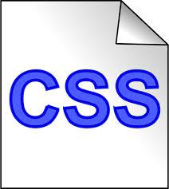

Tema 1: Fundamentos de CSS

Las hojas de estilo CSS reciben el nombre de cascading StylesSheetes. Se aplican a cualquier archivo de HTML, lo que permite que las páginas WEB tengan una mejor presentación y estilo. Los archivos CSS contienen los estilos con que se va a visualizar la paginas Web, teniendo los comando para el encabezado, cuerpo y pie de página. Cuando se aplican varios CSS en un mismo trabajo, se debe tener cuidado de las indicaciones para que no cree conflictos cuando se apliquen, por eso es importante determinar el orden e indicar cual regla tiene mayor relevancia. Las hojas de estilo CSS, tienen tres orígenes: autor, usuario o aplicación de usuario. La de autor se refiere a cuando la hoja se trabaja de forma externa; la de usuario es aquella cuando el usuario realiza adaptaciones según sus preferencias generando su estilo propio; y la de aplicación usuario es cuando el navegador aplica la hoja de estilo predeterminada. Los CSS están compuestos de: reglas o selectores (entre los que se encuentran: Universal, tipo, clase, id, descendentes), pseudo -selectores (se encuentran: pseudo elementos, pseudo clases), propiedades (notación, unidades (longitud, porcentaje, color), fondo, fuente, texto, lista, cajas entre otros.)
Historia de CSS
La priemra version de CSS aparecio en 1996 donde se establecieron
las bases para mejorar la presentación de las páginas web.
En el añ 1999 aparece la versión CSS 2.1, esta versión intradujo nuevas opciones como posicionamiento
de los elementos en la página.
La ultima versión es la CSS3 en donde se agregan caracteristicas como bordes, sombras
Características CSS
1. Se puede definir la forma de toda la página
2. Se puede aplicar estilos a parte de la página.
3. Se puede indicar las distancias entre las líneas
4. Se pueden definir con mayor precisió las margenes, subrayados, entre otros.